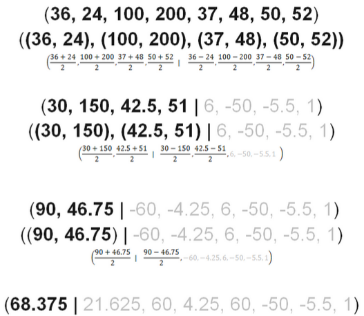
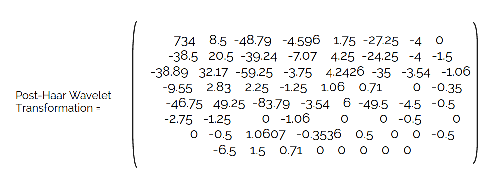
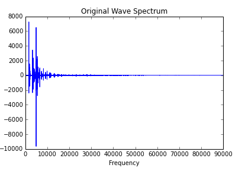
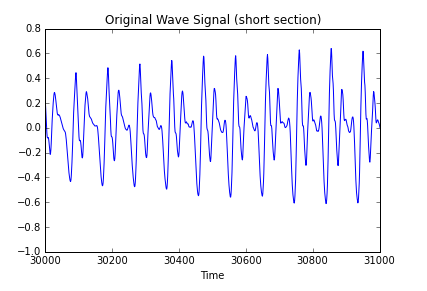
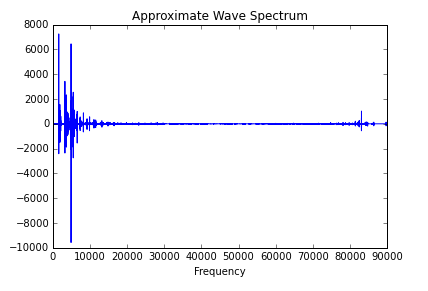
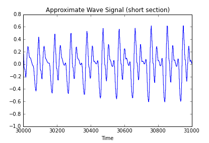

Project Overview
For our final project in Signals and Systems, we chose to study the Haar Wavelet Transform and apply it in both audio compression and image compression. We also used an FFT algorithm to compress the same image and compare the resultant image compressions.
In the first phase of this project, we sought a mathematical understanding of the Haar Wavelet Transform. Once we understood how the transform worked in both one and two dimensons, we began working on using the transform to compress audio, using our one-dimensional understanding of the transform, and images, using our two-dimensional understanding of the transform.
The mathematics is explained in the following two sections and we then demo our code and results.
Haar Wavelet Transform: 1D Explanation
Our 1D explanation of the Haar Wavelet Transform is contained within an iPython notebook found here.
Haar Wavelet Transform: 2D Explanation
The process of the mathematics behind the Haar wavelet transform in two dimensions involve averaging to compute an approximate of the original signal, which is similar to applying low-pass filters. In addition, the transform involves computing the differences across the signal to detect when it is okay to attenuate certain detail coefficients to zero, which is similar to high-pass filters.
Each image is split into blocks that have a size with the form of 2n, in order to have a format that can have all values paired with each recursive step.
The following image is an example 8 by 8 matrix:
Example 8 by 8 matrix
We will be applying the transform process specifically to the first row of the 8 by 8 matrix, as shown below:
The row that we will be applying the transform on
The mathematical steps of the Haar Wavelet Transform:
- Pair all of the values of the original now
- For each pair (a, b), calculate (a+b)/2, and then replace the values of the original row. These values are the approximate coefficients, since you are taking a running average. Shown in black in the example below.
- For each pair (a, b), calculate (a-b)/2, and then replace the values of the original row. These values are the difference coefficients, since you are taking a running difference. Shown in gray in the example below.
- Repeat STEP 1-3 on the approximate coefficients, until you are left with one approximate coefficient
Here are the steps illustrated out on one row:
Once you do the steps on every row and every column of the 8 by 8 matrix, you end up with the following matrix:
Now let's compare this to the original matrix.
Implementation: Haar Wavelet Audio Compression
To see the effect of the Haar Wavelet transform on an audio signal, we implemented the transform using the pywavelet library. You take the original signal, and by taking a running average and running difference, you are essentially putting the signal through a low pass and high pass filter. In the 1D implementation of the Haar Wavelet transform, you get two outputs for every level: the approximate and the detail. In the 2D implementation, you get four outputs for every level: approximate, horizontal detail, vertical detail, and diagonal detail. Here is the original signal:
Original Saxophone Wave
 
After taking the transform, you get out two arrays, the approximate and detail signal. We took the approximate part of the signal and a signal of zeros that was the length of the detail signal, and took the inverse Haar wavelet transform to get a lossy compressed version of the audio signal. If you were to take the inverse Haar wavelet transform with the approximate and the detail signal, you would get back the full original signal. Since we attenuated the detail to zero and took the inverse Haar wavelet transform, we get an approximate version of the signal, which we can look at here:
Approximate Saxophone Wave
 
Comparing the approximate spectrum to the original spectrum, there isn't a huge difference. There's a little bit of messy noise in the approximate, due to some sharper edges you can see in the wave. We are a little unsure as to why the spectrums are so similar, and would have expected more high frequencies to be cut out in the approximate spectrum. Comparing the approximate wave to the original wave, you can see that the original wave is a little smoother, and the approximate wave has a more slightly jagged version of the original wave. It's like a less high quality version of the original.
The detail portion of the wave comes out of splitting the original signal into approximate and detail. You can also get this by subtracting the approximate from the original signal. See the detail part here:
Detail Saxophone Wave
Both the spectrum and the wave show the high frequency components of the detail portion of the wave. When you listen to it, it sounds like a higher pitch version of the original signal because it has multiples of the original frequency components in there.
Implementation: Haar Wavelet Image Compression
Haar Wavelet compression involves averaging and differencing all of the values in the rows and columns of an image. When implemented, the transform allows us to quantify levels of detail and perform image compression based on the desired level of detail. The resulting image produced can be then evaluated for the level in which the original values are attenuated and the new image matrix is sparse. A sparse matrix is defined as a matrix with a large portion of the values to be zero.
The image below is the original image of Audrey Hepburn before we performed the Haar Wavelet Transform on it.
Original 512x512 image of Audrey Hepburn
After implementing the mathematics as described in the section "Haar Wavelet Transform: 2D Explanations" using matrix multiplicationwith Matlab, we see the level of attenuation. The image below is the resulting image after the Haar Wavelet transformation.
Haar Wavelet Transformed Image, 84.05% Attenuation
Below is our Matlab code for the Haar Wavelet implementation, which can also be found in our github repository as the file haar_math.m.
clear all; close all;
orig = imread('hepburn.jpg'); % grayscale format
x = im2double(orig); % double-precision floating-point number
% First, we need to find the different number of divisions made to the image to get 8 by 8 blocks that will have the transform implemented on:
[m, n] = size(x)
divisions_row = m/8;
divisions_column = n/8;
new = zeros(m,n); % new matrix of the transformed image
haar = [1.0/8.0 1.0/8.0 1.0/4.0 0 1.0/2.0 0 0 0;
1.0/8.0 1.0/8.0 1.0/4.0 0 -1.0/2.0 0 0 0;
1.0/8.0 1.0/8.0 -1.0/4.0 0 0 1.0/2.0 0 0;
1.0/8.0 1.0/8.0 -1.0/4.0 0 0 -1.0/2.0 0 0;
1.0/8.0 -1.0/8.0 0 1.0/4.0 0 0 1.0/2.0 0;
1.0/8.0 -1.0/8.0 0 1.0/4.0 0 0 -1.0/2.0 0;
1.0/8.0 -1.0/8.0 0 -1.0/4.0 0 0 0 1.0/2.0;
1.0/8.0 -1.0/8.0 0 -1.0/4.0 0 0 0 -1.0/2.0]; % Linear algebra approach, which is a matrix multiplication version of the Haar wavelet transform. This matrix is the equivalent of finding the average and difference of every pair in every row and every column
% The following code, which transforms every division created from the image matrix
for j = 1:divisions_row
for k = 1:divisions_column
new(1+8*(j-1):8*(j),1+8*(k-1):8*(k)) = transpose(haar)*x(1+8*(j-1):8*(j),1+8*(k-1):8*(k))*haar;
end
end
final = uint8(new*255); % make a version of the final image that has grayscale format
% The following code finds the level of attenuation in the original image:
count_orig = 0;
count_not = 0;
for i = 1:length(orig(:,1))
for j = 1:length(orig(1,:))
if orig(j,i) == 0
count_orig = count_orig + 1;
else
count_not = count_not +1;
end
end
end
% The following code finds the level of attenuation in the haar transformed image:
count_transformed = 0;
count_notzero = 0;
for i = 1:length(final(:,1))
for j = 1:length(final(1,:))
if final(j,i) == 0
count_transformed = count_transformed + 1;
else
count_notzero = count_notzero +1;
end
end
end
total_coeff = m*n;
original_attenuation = count_orig*100/total_coeff
transformed_attenuation = count_transformed*100/total_coeff
figure; imshow(x)
figure; imshow(new) Implementation: FFT Image Compression
In order to compare the output of our Haar Wavelet Compression, we implemented a very basic FFT compression algorithm. This algorithm takes the original image as a matrix, performs the 2-dimensional Fourier Transform, and then determines if the magnitude of each term in the Fourier series is below a given threshold. If the magnitude is below the threshold, we attenuate that term to zero.
After creating this sparser matrix, we then perform the inverse 2-D FFT and save that matrix as our compressed image. In addition, we calculate the percentage of terms in the Fourier series that we are attenuating to zero. To determine this percentage, we first calculate how many terms in the Fourier series are already practically 0. We then keep a count of how many additional terms in the Fourier series we are setting to 0. These additional terms that are being attenuated divided by the total number of terms in the series produces the percentage of the terms we attenuated in the Fourier series.
Below is the original image of Audrey Hepburn, followed by several more compressed images using this algorithm. Both the threshold factor, which is multiplied by the term in the Fourier series with the maximum magnitude to determine the threshold, and the percentage of terms in the Fourier series that are attenuated are labeled underneath each compressed image.
Original 512x512 image of Audrey Hepburn
Threshold Factor=0.0001, 77.79% attenuation
Threshold Factor=0.0002, 87.34% attenuation
Threshold Factor=0.0005, 93.7% attenuation
Threshold Factor=0.001, 95.54% attenuation
Threshold Factor=0.002, 96.42% attenuation
Threshold Factor=0.005, 96.82% attenuation
Looking at our results above, we can see that even when we are attenuating only terms in the series that are 1e-4 a factor of the maximum magnitude in the series, we lose over 75% of terms. That means we have made the image matrix over 75% sparser. This form of compression is lossy, just as our Haar Wavelet Transform compression is lossy. We are sacrificing terms in our Fourier Series to create a sparser matrix.
Initially, we get a very close representation of the original image with our compression at 77.79%. Increasing the percentage we attenuate makes the image grainier but still close to the original. We also see huge gains in the percentage we are attenuating without sacrificing a lot of quality in the image. As we keep increasing the percentage of terms we are attenuating, we observe diminishing returns. A 0.4% increase in attenuation above 96% leads to serious distortion of the image, blurring out completely Hepburn's eyes, nose, and mouth.
Below is our FFT compression function, which is also contained in our Github repository as the file fft_compression.m.
function res = fft_compression(imagePath, threshold_factor, outputPath)
% This function takes as input the filename of the image you want to
% compress, the threshold factor which will be multiplied by the term in the
% Fourier series with the greatest magnitude, and the filename of the
% resulting output. The function ouputs the percent of terms in the Fourier
% series that have been attenuated because the magnitude of these terms is
% below the given threshold.
orig = im2double(imread(imagePath));
figure
imshow(orig) %creates the matrix of the original image
Y = fft2(orig); %perform the fft on the original image
[rows, cols] = size(Y);
max_mag = max(max(abs(Y))); %determines the maximum magnitude of the terms in the Fourier Series
Y_compress = Y; %stores the original image in a matrix we will loop through and make sparser
count_orig = 0; %counts the terms in the Fourier series that are already 0
count = 0; %counts the terms in the Fourier series that are attenuated to 0
for m = 1:rows
for n = 1:cols
if abs(Y(m,n)) < threshold_factor*max_mag
Y_compress(m,n) = 0; %attenuates to 0 terms in the Fourier series whose magnitude
%are below threshold
count = count+1;
end
if round(abs(Y(m,n))) == 0 %counts how many terms in the Fourier series are practically 0,
%without attenuation
count_orig = count_orig+1;
end
end
end
compress = abs(ifft2(Y_compress)); %perform the ifft on the new, sparser matrix
figure
imshow(compress)
fin = uint8(255*compress); %converts back so we can save it as a .jpg file
imwrite(fin, outputPath)
percent_attenuate = ((count-count_orig)/ (rows*cols)) * 100; %calculates the percentage of terms in the fourier series that are attenuated
res = percent_attenuate;
endFuture Work
Using what we have learned about the Haar wavelet transform, we would like to be able to implement Haar on fingerprint analysis, specifically seeing how it is more beneficial, in terms of image processing and how it is computationally faster. The ridges and valleys of fingerprints are specific to individuals, and they run parallel to each other, which means that the patterns can be analyzed on a global an dlocal level. The noise and distortion sometimes results in missing details. Using Haar wavelet method, features can be extracted from the fingerprints and sparse matrices can be used to attenuate extra detail. In terms of fingerprint verification, we want to study the verification accuracy and rate using Haar wavelet.
- The usual steps in fingerprint recognition system:
So far, we have only looked at the Haar wavelet transform. More specifically, we have looked at how the wavelet transform is applied to transform the important information of original image into compressed image with a good approximation of the original image and without much loss of information. The other bullet points are areas that we would like to delve into.
Lastly, although we compared the process and outputs of the Haar Wavelet Transform and FFT, we didn't look very much into computation speed of the two, so that would also be another area we would like to examine
Resources
Abdul-Haleem, Mela G., Loay E. George, and Huda M. Al-Bayti. "Fingerprint Recognition Using Haar Wavelet Transform and Local Ridge Attributes Only." International Journal of Advanced Research in Computer Science and Software Engineering 4.1 (2014): n. pag. Web. 01 May 2015.
"PyWavelets - Discrete Wavelet Transform in Python." PyWavelets. N.p., n.d. Web. 01 May 2015.
Mulcahy, Colm. Image Processing Using Haar Wavelet Transform. N.p.: n.p., n.d. Web. 15 Apr. 2015.
Gadre, V. M. "Mod-01 Lec-02 The Haar Wavelet." YouTube. YouTube, n.d. Web. 20 April 2015.
572, Math. Haar Wavelet Image Compression (n.d.): n. pag. Web. 16 Apr. 2015.